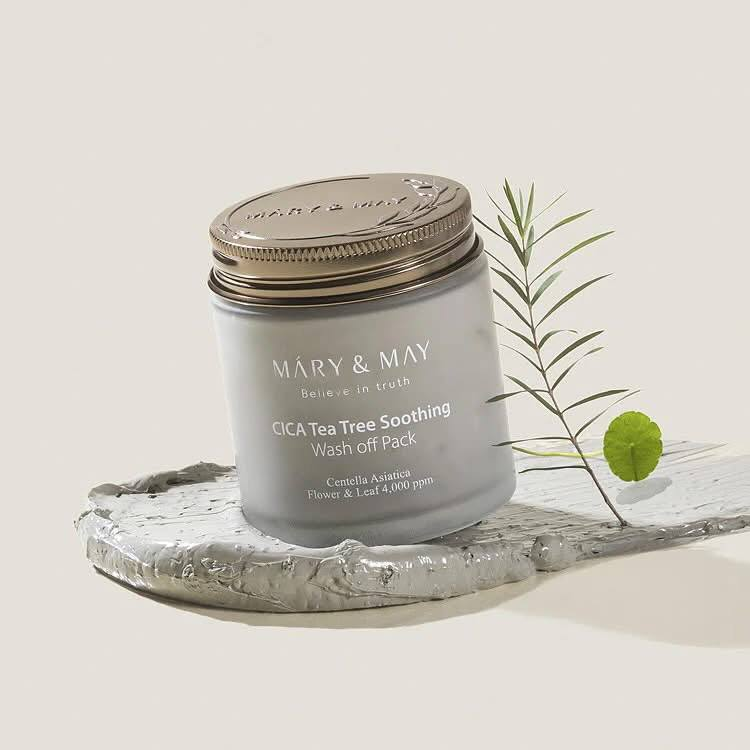
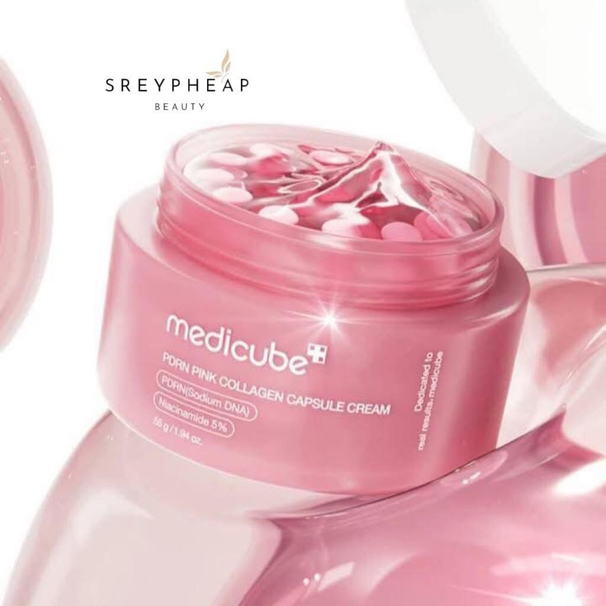
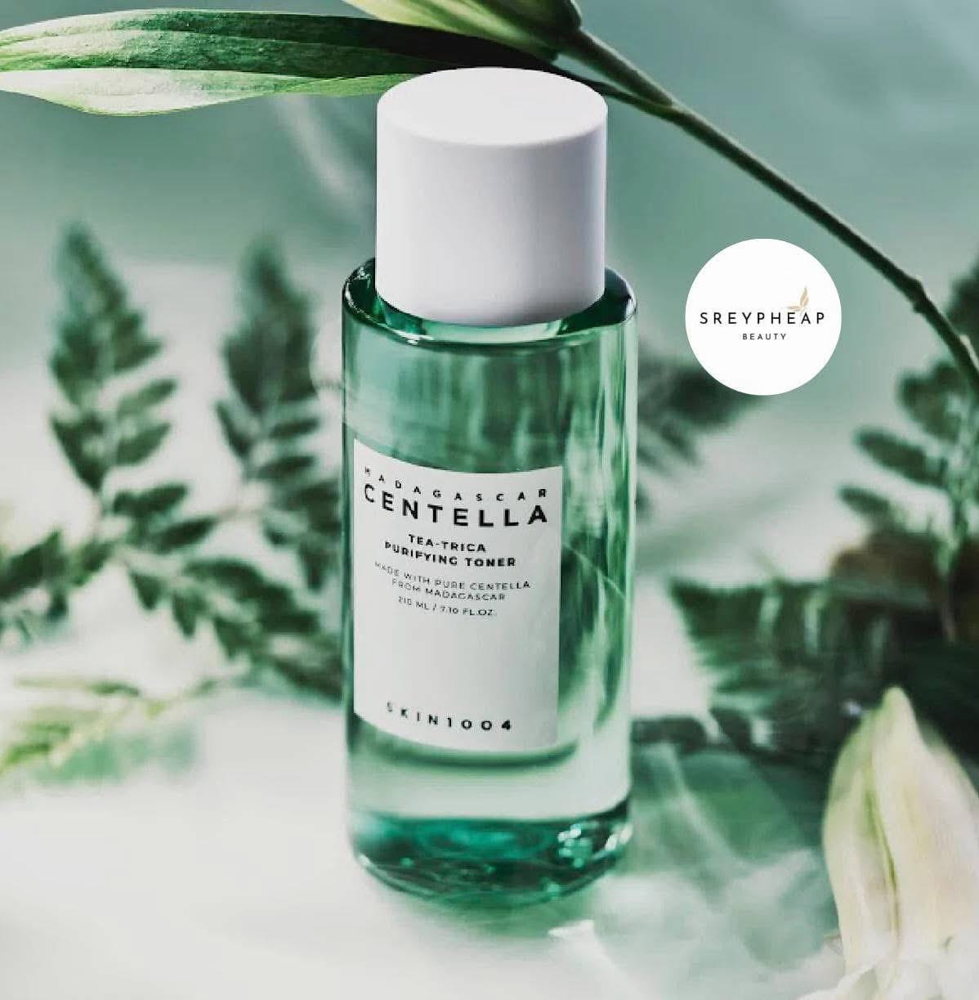
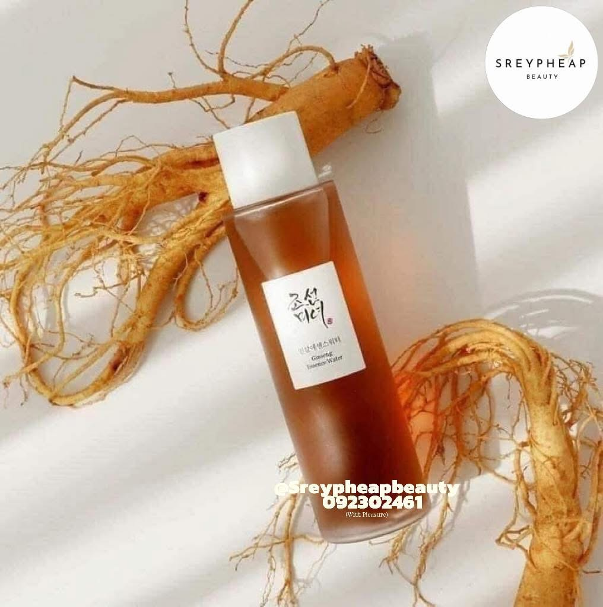

MARRY & MAY Premium Idebenone
$10.99
♡︎𝗠𝗔𝗥𝗬 & 𝗠𝗔𝗬 𝗠𝗔𝗦𝗞 𝗦𝗛𝗘𝗘𝗧♡︎
🫐 MARRY & MAY Premium Idebenone Blackberry Complex Essence Mask 🫐
✨ជួយផ្ដល់សំណើមស្បែកបានល្អ
✨ជួយបន្ដឹងស្បែកមុខ ប្រឆាំងភាពចាស់
✨ជួយឲ្យស្បែកមុខ ស ភ្លឺថ្លា
✨ ជួយកាត់បន្ថយមុខពីការរលាកដោយសារកម្ដៅថ្ងៃ
✨ប្រើជាប្រចាំថ្ងៃ ដើម្បីទទួលបានលទ្ធផលកាន់តែប្រសើរ
»» 1 ប្រអប់មាន 20 សន្លឹក
Buy Now
MARRY & MAY Cica Houttuynia Tea Tree
$10.99
♡︎𝗠𝗔𝗥𝗬 & 𝗠𝗔𝗬 𝗠𝗔𝗦𝗞 𝗦𝗛𝗘𝗘𝗧♡︎
Cica Houttuynia Tea Tree Calming mask
• កាត់បន្ថយបញ្ហាស្បែកមុខងាយប្រតិកម្ម មុខរោល បានយ៉ាងល្អ
• ជួយកាត់បន្ថយ និងជួសជុលរនាំងការពារស្បែកមុខឲ្យល្អ
• ផ្តល់សំណើម ជួយធ្វេីឲ្យស្បែកមុខទន់រលោង និងភ្លឺម៉ត់
• បង្រ្កាបការរោលរមាស់បានលឿន
• ប្រើប្រាស់បានគ្រប់ប្រភេទស្បែកមុខ
Buy Now
MASK">
THANK BERRY
$15.99
🍒THANK BERRY MASK🍒
ម៉ាសដែលអាចបិតប្រចាំថ្ងៃបានគឺ Thank berry mask ចម្រាញ់វីតាមីនចេញពីផ្លែberriesចំនួន5ប្រភេទ🍒
វាមានតួនាទីទៅកាត់បន្ថយការរោល រលាក នៃស្បែក ជួយធ្វើឲ្យស្បែកមុខរលោង ភ្លឺថ្លា 🍓
ផ្តល់សំណើមដល់ស្បែកបានល្អ 🍒
ចង់បានស្បែកមុខ ទន់ម៉ត់រលោងនិងមានសំណើម កុំភ្លេច Thank berry mask 🍓
មួយប្រអប់ មាន30សន្លឹក តម្លៃសមរម្យទៀត
🇰🇷ធានាផលិតផលសុទ្ធពីកូរ៉េ 100%
Buy Now
Manyo Factory - Thanks berry mask
$15.99
Manyo Factory - Thanks berry mask 🍃
ជាប្រភេទម៉ាសសន្លឹកសម្រាប់ប្រើប្រាស់ប្រចាំថ្ងៃ ដែលមានសារធាតុផ្សំចេញពី Berries 5 ប្រភេទ Green tea និង Centella ដែលមានអត្ថប្រយោជន៍ដូចជា:
-ជួយផ្តល់សំណើមដល់ស្បែក
-ជួយកាត់បន្ថយបញ្ហាមុន រោល រលាក ក្រហម
-ជួយពង្រឹងរបាំងស្បែក
-ជួួយធ្វើឲ្យស្បែកទន់ ភ្លឺថ្លា
*** 1 ប្រអប់មាន 30 សន្លឹក
Buy Now
Calendula Peptide Ageless Sleeping Mask
$12.99
🌙 Mary & May Calendula Peptide Ageless Sleeping Mask 🌙
ជាម៉ាសអប់មុខផ្សំចេញពីផ្កា Calendula
និងពពួកPeptide 25 ប្រភេទ
• ជួយបំបាត់បញ្ហារោលក្រហម ឡើងមុន ,ស្នាម
• ជួយបំពេញជាតិទឹកដល់ស្បែក ធ្វើឲ្យស្បែកទន់
• ជួយកាត់បន្ថយទប់និង ពន្យារភាពចាស់ជ្រីវជ្រួញរបស់ស្បែក
• សារធាតុប្រឆាំងអុកស៊ីតកម្ម ជួយឲ្យស្បែកមានសុខភាពល្អ
• ជួយពង្រឹងរនាំងការពារស្បែក
📍របៀបប្រើ ១សប្តាហ៍ប្រើ២ទៅ៣ដង លាបលើមុខតែឯងហើយគេង ឬក៏លាបពីលើSkin Care Routine ពេលយប់ ។
Buy Now
Mary&may
$12.99
✨Mary&may clay mask ✨
Rose hyaluronic hydra🌹: បន្តឹងស្បែកធ្វើអោយស្បែកភ្លឺទន់រលោង ពន្យាភាពចាស់ទប់ស្កាត់ភាពជ្រាវជ្រួញ ពិសេសស្បែកស្ងួត🌹
Buy Now
Clay Mask">
Mary and May
$12.99
✨Mary and May Clay Mask ~ ជាប្រភេទម៉ាសភក់✨
Cica Tea Tree : សម្រាប់ស្បែកមុខ ងាយប្រតិកម្ម ឡើងរោល ក្រហម ឡើងមុន
• មួយអាទិត្យប្រេីបានចន្លោះពី 2»3ដង ✨
Buy Now
Mary and May
$12.99
Mary and May Clay Mask ~ ជាប្រភេទម៉ាសភក់✨
🍋 Lemon : ជួយបំបាត់ស្នាមអុចខ្មៅលើស្បែក បំបាត់ស្នាម ធ្វើអោតស្បែកភ្លឺថ្លា រលោង បង្រួមរុន្ធញើស ធ្វើអោយស្បែកស
• មួយអាទិត្យប្រេីបានចន្លោះពី 2»3ដង
Buy Now
Blackberry Complex Glow Washoff Pack
$12.99
Mary &May Blackberry Complex Glow Washoff Pack
គឺជាប្រភេទ Clay Mask មកពីប្រទេសកូរ៉េ
✨ ជួយរាល់បញ្ហាស្បែកមុខ
✨ ពិសេសជួយទប់ស្កាត់ការឡើងមុន
✨ មិនធ្វើអោយឡើងប្រេង
✨ ជួយបំបាត់រោលក្រហមបឹតជាតិពុលលើផ្ទៃមុខបានយ៉ាងល្អ
✨ ជួយផ្ចិតរន្ធញើស
✨ ជួយជម្រុះកោសិកាចាស់ៗ
✨ បន្តឹងស្បែកធ្វើអោយក្មេងជាងវ័យ
✨ អាចប្រើប្រាស់បានគ្រប់ប្រភេទស្បែក
👉🏻ផ្សំចេញពី
- Blackberry គឺជាប្រភពដ៏ល្អ នៃវិតាមីនA
- Almond Peel
- Canadian Glacler Soil Amazon White Clay
Buy Now
SKINFOOD CARROT CAROTENE DAILY SHEET MASK
$15.99
SKINFOOD CARROT CAROTENE DAILY SHEET MASK 🥕
🥕ម៉ាសសន្លឹកបិទមុខប្រចាំថ្ងៃ ផ្សំឡើងដោយសារធាតុការ៉ុត ដែលសម្បូរទៅដោយសារធាតុ Beta-carotene ដើម្បីផ្តល់សំណើម និងផ្តល់សំណើមដល់ស្បែកដែលរលាក។
🥕សំបូរទៅដោយសារធាតុ Beta-carotene ពីប្រេងគ្រាប់ការ៉ុត ដើម្បីជួយពង្រឹងសុខភាពស្បែក និងបំបាត់ការរលាក។
🥕ជួយផ្តល់សំណេីមបានជ្រៅដល់ស្រទាប់ស្បែកខាងក្នុង និងស្រស់ស្រាយ
🥕គ្រូពេទ្យជំនាញខាងសើស្បែកបានធ្វើតេស្ត និងអាចប្រេីប្រាស់បានសម្រាប់អ្នកមានស្បែកខ្សោយ
1box 30EA
ផលិតផលលក់ដាច់ប្រចាំប្រទេសកូរ៉េ🇰🇷
Buy Now
SKINFOOD Rice Brightening Daily Mask
$15.99
SKINFOOD Rice Brightening Daily Mask 🌾
• ធ្វើអោយស្បែកមុខភ្លឺថ្លា ទន់រលោង
• ផ្តល់សំណើមជ្រៅដល់ស្បែកមុខ
• ធ្វើអោយស្បែកសទន់ម៉ត់
• ជម្រុះមុនសាច់ មុនក្បាលខ្មៅ មុនអង្កាម
• ជម្រុះកោសិកាចាស់ដែលងាប់ បន្តុះកោសិកាថ្មី ✨
Buy Now
Skinfood Yuja C Daily Mask 30EA
$15.99
Skinfood Yuja C Daily Mask 30EA🍋
ជាប្រភេទ ម៉ាស់សន្លឹកដែលបិទបានរាល់ថ្ងៃជួយផ្ដល់សំណេីមបំបាត់ស្នាម
- ផ្ទុកទៅដោយ Yuja's vitamin C ជួយទៅលេីបញ្ហាខ្មៅស្រអាប់ ស្នាមអុជខ្មៅ និងពណ៍ស្បែកមិនស្មេីគ្នា។
- ផ្ទុកទៅដោយ Niacinamide ជួយទៅ បង្កើនភាពស្រស់ថ្លា Balance តុល្យភាពប្រេងនិងសំណេីម។
Buy Now
Medicube Deep Vita C Daily Quick Mask
$16.99
🍋Medicube Deep Vita C Daily Quick Mask
• ម៉ាសសម្រាប់ប្រើប្រចាំថ្ងៃ មានប្រសិទ្ធិភាពខ្ពស់លើការជួយអោយស្បែកភ្លឺថ្លា
• បំបាត់ស្នាមមុន ជាំ អុចខ្មៅ ជាមួយនឹងសារធាតុ Pure Vitamin C
• សារធាតុបំប៉នជួយអោយស្បែកភ្លឺ Niacinamide និង Acetyl Glucosamine
• បំបាត់ស្នាម និង កែតម្រូវពណ៌ស្បែក ✨
🔗 របៀបប្រើ: អាចបិទត្រឹមរយៈពេល ១ នាទីប៉ុណ្ណោះ ប៉ុន្តែអាចប្រើបាន ៣ ទៅ ៤ ដងក្នុងមួយសប្តាហ៍ ឬមួយសប្តាហ៍ពេញបាន
🔗 សាកសមសម្រាប់គ្រប់ប្រភេទស្បែក
📌 ធានាផលិតផលកូរ៉េសុទ្ធ🇰🇷💯%
📌 អីវ៉ាន់មានស្តុក
សម្រាប់ការសាកសួរព័ត៌មាន ឬកម្មង់បង
Buy Now
Mary&May Sensitive Soothing Gel Cream
$11.99
Mary&May Sensitive Soothing Gel Cream ជាគ្រីមជួយផ្តល់សំណើម និងព្យាបាលបញ្ហាមុន រោល
_ ជួយពង្រឹងរបាំងការពារស្បែកបានល្អ
_ ជួយផ្តល់សំណើមដល់ស្បែក
_ សម្រួលបញ្ហារោលរលាក ស្បែកងាយប្រតិកម្ម
_ ជួយប្រឆាំងការឡើងមុន
_ ជួយសម្រួលភាពតានតឹងនៃស្បែក
Buy Now
Beauty Of Joseon Ground Rice and Honey Glow Mask
$14.99
Beauty Of Joseon Ground Rice and Honey Glow Mask
•ជាម៉ាសអប់មុខផ្សំចេញពីអង្ករ បូករួមទឹកឃ្មុំ នឹងរូបមន្តផ្សំពិសេសៗជាច្រើនមុខ
•ជួយឲ្យស្បែកមុខសភ្លឺថ្លា មានសំណើម
•ជួយបំបាត់ស្នាមមុន ស្នាមអុជខ្មៅ
•ជួយឲ្យស្បែកទន់ នឹងមានសុខភាពល្អ
•ចំណុះ150ml
+++របៀបប្រើ 1សប្តាហ៍ប្រើ២ទៅ៣ដង លាបរួចទុកពី៥ទៅ១០នាទីរួចលាងទឹកចេញ
Buy Now
Toner Pad">
Needly Daily
$14.99
Needly Daily Toner Pad 🤍
[ 280g 60pads ]
គឺជាសំឡីTonerជូតមុខក្នុងមួយប្រអប់មានដល់60សន្លឹក សម្រាប់ប្រើជារៀងរាល់ថ្ងៃសម្អាតជ្រៅ ជួយបង្រួមរន្ធរោម & បន្ថែមសំណើមជាមួយបន្ទះសំឡីមាន2ស្រទាប់សងខាង
🤍 សំឡីខាងគ្រើមសម្រាប់ជូតជម្រុះកោសិកាចាស់ៗ មុនក្បាលខ្មៅក្បាលស មុនអង្កាម
🤍 សំឡីខាងទន់សម្រាប់ផ្តល់សំណើម, ជួយពន្លឿនការប្រើskincareអោយឆាប់មានប្រសិទ្ធភាព។
🤍 ជាពិសេសអាចធ្វើជាម៉ាស់បិទមុខបានព្រោះបន្ទះសំឡីរបស់Needly Toner Padមានទំហំធំខុសពីគេ។
[ ប្រើបានចំពោះស្បែកមុខគ្រប់ប្រភេទ សូម្បីស្បែកដែលឆាប់ sensitive រោលឡើងមុនក៏អាចប្រើបាន ]
Buy Now
Mary & May + Blackberry and Complex Intensive Cream
$11.99
Mary & May Idebenone + Blackberry and Complex Intensive Cream🫐
•គ្រីមលាបមុខផ្សំចេញ63% Blackberry Complex និង Idebenone (500ppm) ដែលមានលក្ខណៈសម្បត្តិប្រឆាំងអុកស៊ីតកម្មដ៏មានឥទ្ធិពល ធ្វើអោយស្បែកមើលទៅក្មេងជាងវ័🫐
.មានសារធាតុ Ceramides និង Phytosphingosine 5 ប្រភេទ ដើម្បីបង្កើតរបាំងសំណើមស្បែកដ៏រឹងមាំ និងការពារការបាត់បង់ជាតិទឹកពីធម្មជាតិ🫐.ផ្តល់ជាតិទឹកខ្លាំងដល់ស្បែកស្ងួត ជាមួយនឹងសាច់ក្រែមក្រាស់ នឹងជួយឲ្យស្បែកភ្លឺេលោង🫐•ជួយលុបបំបាត់ស្នាមជ្រីវជ្រួញ នឹងជួយឲ្យស្បែកសភ្លឺថ្លា🫐
•ចំណុះ70g🫐
+++របៀបប្រើ ១ថ្ងៃ២ដងព្រឹកនឹងយប់🫐
Buy Now
Mary & May Idebenone + Blackberry Complex Serum
$8.99
🫐Mary & May Idebenone + Blackberry Complex Serum🫐
•ជាប្រភេទសេរ៉ូមដែលមានប្រសិទ្ធភាពខ្ពស់លើការការពារកោសិកាស្បែក គ្មានក្លិនក្រអូប
•ជួយទប់ស្កាត់ភាពចាស់ ជួយឲ្យស្បែកក្មេងជាងវ័យ
•ផ្តល់សំណើមនឹងសារធាតុចិញ្ចឹម ជួយឲ្យស្បែករឹងមាំ
•ជួយស្តារស្បែកដែលខូចដោយសារធាតុកាត់ នឹងជួយឲ្យស្បែកមានសុខភាពរឹងមាំ
•ចំណុះ 30ml
Buy Now
Medicube PDRN Pink Peptide Seru
$14.99
Medicube PDRN Pink Peptide Serum
ជាប្រភេទសេរ៉ូមដែរមានការផលិតឡើងក្នុងបច្ចេកវិទ្យាទំនើបខ្លាំងវាមានតួនាទីដូចជា
🌸ជួយអោយស្បែកភ្លឺថ្លា
🌸បំបាត់បញ្ហាស្នាមមុន ជាំ អុចខ្មៅ
🌸ជួយបន្តឹងស្បែកមុខ ជួយអោយស្បែកក្មេងជាងវ័យ
🌸Salmon PDRN ជួយអោយស្បែកភ្លឺរលោង បំបាត់បញ្ហាស្នាម
🌸ជួយពន្លឿនការបណ្តុះកោសិកាថ្មី 5 Types Peptide Complex
🌸បំបាត់បញ្ហាស្បែកជ្រួវជ្រួញ ទប់ស្កាត់ភាពចាស់
🌸មាន Ocimum Tenuiflorum សម្រួលបញ្ហាស្បែករោល រលាក ងាយប្រតិកម្ម
🌸មានHyaluronic Acid ផ្តលសំណើមស្បែក
Buy Now
Medicube collagen jelly cream
$14.99
🌷✨Medicube collagen jelly cream ជួយទៅលើបញ្ហាស្នាម ជួយផ្ចិតរន្ធញើស ធ្វើឲ្យស្បែកសស្មើ ជួយផ្តល់សំណើម ផ្ដល់ជាតិទឹក កាត់បន្ថយការរលាកនិងធ្វើឲ្យស្បែកតឹងហាប់ណែន✨🌷
Buy Now
Medicube Deep Vita C Capsule Cream
$14.99
Medicube Deep Vita C Capsule Cream ✨🤎
- ប្រភេទគ្រីមវីតាមីន C ដែរមានកំរិតព្យាបាលខ្លាំង
- គ្រាប់វីតាមីននៅក្នុងសាច់គ្រីម រក្សាគុណភាពបាន 100% ផ្ដល់ជូននូវការព្យាបាលស្នាមយ៉ាងមានប្រសិទ្ធភាពខ្ពស់
- ព្យាបាលទាំងស្នាមមុន ស្នាមអាច់រុយ ស្នាមអុជខ្មៅ ស្បែកខ្មៅស្រអាប់
- សារធាតុផ្សំចេញពី: Sea Buckthorn Extract 50% + 5% Niacinamide + Vitamin C
- បន្ថែមជាមួយ Ferulic Acid, Vitamin E, Q, and P នៅក្នុងសាច់គ្រីមជែលថ្លា ផ្ដល់សំណើមបានច្រើន នឹងកាត់បន្ថយស្បែករោល
- មានមុខងារបន្តឹងស្បែកមុខ រក្សារស្បែកក្មេងជាងវ័យផងដែរ
វិធីប្រើប្រាស់ : ដួសជែលថ្លា នឹងគ្រាប់វីតាមីន 1 គ្រាប់ដាក់លើដៃលាយចូលគ្នាអោយសព្វមុនពេលលាបនៅលើស្បែក
Buy Now

Medicube PDRN Pink Collagen Capsule Cream
$14.99
Medicube PDRN Pink Collagen Capsule Cream
🌸 ជាប្រភេទគ្រីមដែលផ្ទុកសារធាតុចិញ្ចឹមជាច្រើន ដើម្បីជំរុញអោយស្បែកមុខភ្លឺរលោង បំបាត់ស្នាមអុជខ្មៅ
🌸 មានកូឡាជេន ជួយជំរុញស្បែកមុខអោយតឹងរលោង ក្មេងជាងវិញ
🌸 ជួយស្បែកមុខអោយមានសំណើមគ្រប់គ្រាន់
🌸 អាចប្រើបានគ្រប់ប្រភេទស្បែកមុខ
Buy Now
Chemical
$13.99
❄️✨Chemical Sunscreen តម្លៃសមរម្យមួយទៀតហើយសម្រាប់ស្បែក ខ្លាញ់ BEAUTY OF JOSEON - Sunscreen Relief Sun Aqua Fresh Rice + B5✨❄️
❄️Texture មកបែបឡេ ស្រាល ងាយលាបចូលស្បែកបានល្អ មិនធ្វើអោយស ប្រតាក មិនធ្ងន់មុខ និងផ្តល់សំណើមបានល្អ
❄️ចម្រាញ់ចេញពីអង្ករ និង Panthenol (Vitamin B5) សម្បូរទៅធាតុសំណើម និងជាតិទឹកខ្ពស់ ដូចជាសារធាតុអាស៊ីតអាមីណូ ជួយការពាររនាំងការពារស្បែក
❄️ល្អសម្រាប់អ្នកមានស្បែកប្រេង និងចម្រុះ
❄️ជួយផ្តល់ភាពត្រជាក់ដល់ស្បែក
Buy Now
Beauty Of Joseon Sunscreen
$12.99
✨Beauty Of Joseon Sunscreen ( Rice + Probiotics )✨
✨ជាប្រភេទឡេការពារកម្តៅថ្ងៃដែល:
•ផ្សំឡើងពីអង្ករនិង probiotics ល្អៗ ( ជាប្រភេទ organic sunscreen )
•ប្រើបានគ្រប់ប្រភេទស្បែកមុខ
•ការពារស្បែកពីពន្លឺព្រះអាទិត្យបានល្អ UV Protection SPF 50+ PA++++
•សាច់ឡេស្រាល ងាយលាបចូលមុខអស់ មិនស្អិតប្រតាក់ជាប់មុខដែលធ្វើឲ្យធ្ងន់មុខទេ
•ផ្តល់សំណើមដល់ស្បែកមុខធ្វើឲ្យមុខទន់ រលោង និង glow
•ល្អសម្រាប់ស្បែកមុខដែលងាយរោល និង ប្រតិកម្ម ( sensitive skin ) ប្រើបានទាំងស្រីនិងបុរស
Buy Now
PWB (Pink White Bumm) body lotion 120ml
$9.99
🍑 PWB (Pink White Bumm) body lotion 120ml
_ជួយព្យាបាលបញ្ហាសង្វារ ក្រិន ខ្មៅ ស្នាម អាចលាបបានកន្លែងដែលក្រិនខ្មៅដូចជា គូទ ក្រលៀន កែងដៃ ជង្គង់🍑✨
-ជួយបំបិតក្រិន កន្ទួលរមាស់នៅលើស្បែក🍑✨
-ជួយឪ្យស្បែកគូទទន់ សរម្ម៉ត់ភ្លឺពីខាងក្នុង ជឿជាក់ក្នុងការពាក្យBikini
-ជួយបំបានត់ស្នាមសត្វខាំជាដើម នឹង ជួយរាល់បញ្ហាសង្វារសដែរមាននៅគ្រប់កន្លែង អាចប្រើបានគ្រប់កន្លែងណាដែរមានក្រិនខ្មៅ
-សម្រាប់អ្នកមានស្នាមមុនខ្នងក៏អាចប្រើបានជាបំបាត់ស្នាមសល់ពីការកើតមុនទៀតផង 🍑✨
Buy Now
SKIN 1004 Tone Brightening boosting toner
$10.99
🐚SKIN 1004 Tone Brightening boosting toner🐚
សម្រាប់ព្យាបាលបញ្ហាមស្នាមមុន ស្នាមអុជខ្មៅ ស្នាមជាំ ស្នាមអាចម៌រុយ ធ្វើឲ្យស្បែកស ភ្លឺថ្លា បំពេញជាតិទឹកដល់ស្បែក។
ផលិតផលសុទ្ធរបស់ប្រទេសកូរ៉េ
Buy Now

Skin1004 Tea-Attica Purifying Toner
$10.99
🌱Skin1004 Tea-Attica Purifying Toner🌱
•ជាប្រភេទទឹកTonerដែលប្រើប្រាស់បានគ្រប់ប្រភេទស្បែក ស្បែកងាយប្រតិកម្មក៏អាចប្រើបាន
•ជួយកម្ចាត់បាក់តេរី ដែលបង្កឲ្យឡើងមុន
•ជួយព្យាបាលឲ្យសះ នឹងត្រជាក់ស្បែក
•កាត់បន្ថយការឡើងក្រហម រោល នឹងរលាក
•ជួយបង្រួមរន្ធញើស នឹងធ្វើឲ្យស្បែកម៉ដ្ឋភ្លឺថ្លា
•ចំណុះ210ml
+++របៀបប្រើ ប្រើប្រាស់ជាប្រចាំថ្ងៃ១ថ្ងៃ២ដង
Buy Now
Skin1004 Poremizing Clear Toner
$10.50
🎀Skin1004 Poremizing Clear Toner🎀
•ជាប្រភេទToner ផ្តោតសំខាន់ក្នុងការបង្រួមរន្ធញើស
•ជួយជម្រុះកោសិកាចាស់ នឹង ជាតិខ្លាញ់ដែលលើស
•ជួយរក្សាលំនឹងpH ប្រឆាំងនឹងការរលាក នឹងក្រហម
•ជួយឲ្យស្បែកភ្លឺស្រស់ថ្លា មានសំណើម
•ចំណុះ210ml
+++របៀបប្រើ ប្រើប្រាស់ជាប្រចាំថ្ងៃ១ថ្ងៃ២ដង
Buy Now
Skin1004 Centella Toning Toner
$10.50
Skin1004 Centella Toning Toner✨
•ជាTonerសម្រាប់ស្បែកខ្សោយងាយប្រតិកម្ម នឹងស្បែកងាយឡើងមុន✨
•ជួយកំចាត់ខ្លាញ់លើសលើស្បែក ជួយឲ្យស្បែកទន់✨
•ជួយព្យាបាលស្បែកមុខរោលមុន កន្តួលក្រហម✨
•ជួយកំចាត់បាក់តេរី ដែលបង្កឲ្យឡើងមុន✨
•ជួយផ្តល់សំណើម មិនធ្វើឲ្យស្ងួតមុខ ជួយកាត់បន្ថយស្លាកស្នាម✨
•ចំណុះ 210ml
Buy Now
SKIN 1004 Centella Air-fit sunscreen light
$12.99
SKIN 1004 Centella Air-fit sunscreen light
•ជាប្រភេទ physical sunscreen SPF 30 PA++++
•មិនបន្សល់ white cast លេីស្បែក
•សាច់ស្រាល ស្រួលលាប
•ផ្ដល់សំណេីមដល់ស្បែក
•ជួយឲ្យស្បែកភ្លឺបែបធម្មជាតិ
•សក្តិសមសម្រាប់ស្បែកងាយប្រតិកម្ម
ចំណុះ 50ml / ផលិតផលពីប្រទេសកូរ៉េ🇰🇷
Buy Now
SKIN1004 Madagascar Centella Tone Brightening
$11.99
SKIN1004 Madagascar Centella Tone Brightening
Tone-Up Sunscreen SPF50+ PA++++
[ផលិតនៅប្រទេសកូរ៉េ🇰🇷]
ឡេការពារកំដៅថ្ងៃដែលមានពណ៌ peach ស្រាលជាមួយ Madewhite™
- ឡេការពារកំដៅថ្ងៃ Hybrid (ការផ្សំនៃសារធាតុចម្រោះជាតិរ៉ែ) ជាមួយនឹងការការពារកាំរស្មី UV ដ៏រឹងមាំនៃ SPF 50+ និង PA++++
- ក្រីមលាបពណ៌ស្រាលៗ ធ្វើអោយស្បែកមុខភ្លឺថ្លា
- ព្យាបាលស្បែកដែលរលាក និងចិញ្ចឹមរបាំងការពារស្បែក
- Madewhite™ (ធាតុផ្សំធម្មជាតិដែលមានប៉ាតង់) ធ្វើអោយស្បែកភ្លឺ រលោង បែបធម្មជាតិ
- Niacinamide និងអាស៊ីត tranexamic កាត់បន្ថយការប្រែពណ៌ ធ្វើឱ្យមានតុល្យភាពពណ៌ស្បែកមិនស្មើគ្នា
- Centella និង Aqua Bomb complex ផ្តល់សំណើម និងផ្តល់សំណើម
Buy Now
️Skin 1004 Hyalu-Cica Sun Serum
$11.99
❄️Skin 1004 Hyalu-Cica Sun Serum ❄️
❄️សាច់ដូចសេរ៉ូម លាបចូលមុខលឿនមិនប្រតាក
❄️មិនធ្វើអោយសជាងមុនអីទេ តែមានសារធាតុសេរ៉ូម ជួយបំប៉នស្បែក
❄️មិនបន្សល់កំណកសៗលើស្បែក
❄️លាបហើយមានអារម្មណ៍ថាបានលាបសេរ៉ូមនិងក្រែមផ្តល់សំណេីមក្នុងពេលតែមួយ ដែលមាម SPF50+PA++++
❄️លាបហើយធ្វើអោយស្បែកភ្លឺរលោង
Buy Now
Skin1004 Centella HYALU-CICA Moisture Cream
$12.50
Skin1004 Centella HYALU-CICA Moisture Cream 🧊
ជួយប្រភេទគ្រីមដែលជួយបំពេញជាតិទឹកដល់ស្បែកបានរយ:ពេលយូរ និងផ្ដល់សំណើមដល់ស្បែកដែលស្ងួតបានជ្រៅ និងផ្ដល់ស្រទាប់ជាតិទឹកដល់ស្បែក។
- មាន Hyalu-Cica រួមបញ្ចូលគ្នាតែមួយរវាង Hyaluronic Acid និង Centella Asiatica ដែលជួយផ្ដល់ជាតិទឹក និងស្ដារបាំងស្បែកឡើងវិញ។🧊
- ជួយអោយស្បែកមានសុខភាពល្អ
សាកសមសម្រាប់អ្នកដែលមានស្បែកស្ងួត ស្បែកធម្មតាក៏អាចប្រើបាន🧊
Buy Now
Skin 1004 MADAGASCAR CENTELLA SOOTHING Cream
$12.99
Skin 1004 MADAGASCAR CENTELLA SOOTHING Cream: ជាប្រភេទគ្រីម ចិញ្ចឹមស្បែក បណ្ដឹង សំរាប់ស្បែកមុខ ខ្លាញ់ មុន រោល រមាស់ ដែលផ្សុំឡើងយ៉ាងពិសេស ជាមួយនឹង Centella Asiatica និង Ceramide :
✨ជួយព្យាបាលស្បែកមុខ មុន រោល រមាស់ កន្ទួលក្រហម
✨ជួយកំចាត់បាក់តេរី សារធាតុពុល
✨ជួយបំបាត់ស្នាមមុន
✨ផ្ដល់សំណើម បណ្ដឹងស្បែកមុខ
✨ជួយឲស្បែកមុខស្រស់ស្រាយ
Buy Now
Skin1004 probiotic cica intensive ampoule
$12.99
✨ Skin1004 probiotic cica intensive ampoule✨
Recommend សម្រាប់បងៗមានបញ្ហាដូចជា :
•ស្បែករោល ខ្សោយខ្លំាង អ្នកទើបតែផ្ដាច់ឡេលាយ
•មុខខ្មៅស្រអាប់ នឹង គ្មានសំណើម
•ខូចរនំាងការពារស្បែក
ជួយបន្ដឹងស្បែកមុខ អោយក្មេងជាងវ័យ ម៉ត់រលោង
Buy Now
Skin 1004 Madagascar Centella Hyalu Cica First Ampoule
$11.99
Skin 1004 Madagascar Centella Hyalu Cica First Ampoule
❄️ប្រភេទ Serum លាបមុខអាចប្រើបានទាំងព្រឹកនិងយប់
❄️ល្អសម្រាប់ស្បែកងាយប្រតិកម្មនឹងមុខកើតមុនឬមុខខ្លាញ់
❄️បង្កើនភាពរឹងមាំដល់ស្បែក ធ្វើអោយស្បែកមានសុខភាពល្អ
❄️កាត់បន្ថយភាពតានតឹង stress skin
ផ្ដល់ជីវជាតិនិង សំណើម
ធ្វើអោយស្បែកភ្លឺថ្លា
Buy Now
Centella Madagasca Skin 1004 ampoule 100ml
$12.50
Centella Madagasca Skin 1004 ampoule 100ml
ចំរាញ់ចេញពី Centella 100% តំបន់Madagascar ដែលមានសុវត្ថិភាពចំពោះគ្រប់ប្រភេទស្បែក រួមទាំងស្បែកងាយប្រតិកម្មខ្លាំង
សេរ៉ូមមានសាច់រាវ លាបចូលស្បែកបានលឿនមិនស្អិត ននឹងជំនាញក្នុងការ ជួសជុលស្បែកងាយប្រតិកម្ម បណ្តុះស្បែកឡើងវិញ ជាពិសេសអ្នកដែលមានស្បែកស្តើង ហើយខ្សោយ ព្រមទាំង :
•កាត់បន្ថយការរោលរមាស់ ការពាររលាកក្រហម កាត់បន្ថយការឡើងមុនហើមៗ
•ជួសជុលស្បែកដែលខូច ជួយcalming ស្បែក
•កាត់បន្ថយស្នាមមុន ធ្វើឲ្យស្បែកសទន់រលោង
Buy Now
Skin1004 Centella Light Cleansing Oil
$9.99
✨Skin1004 Centella Light Cleansing Oil✨
•ជាប្រភេទប្រេងលាងសម្អាតMake Upនឹងធូលីដីបានល្អ
•សក្តិសមសម្រាប់ស្បែកគ្រប់ប្រភេទ ជាពិសេសស្បែកដែលខ្សោយងាយរោល ងាយប្រតិកម្មក៏អាចប្រើបាន
•ជួយសម្អាតបានយ៉ាងជ្រៅ
•កំចាត់មុនខ្សាច់ មុនអង្កាម នឹងធ្វើឲ្យស្បែកមានសុខភាពល្អ✨
SKIN1004 Ampoule foam 🫧
✨អាចប្រើបានគ្រប់ប្រភេទស្បែក ជាពិសេសអ្នកដែលមានស្បែក sensitive ងាយប្រតិកម្ម
✨ជួយកាត់បន្ថយការរមាស់ រោល ក្រហមស្បែក
✨មិនធ្វើឲ្យមុខស្ងួត សាច់ហ្វូមទន់ត្រជាក់ ងាយស្រួលប្រើ
Buy Now
Skin1004 Centella Light Cleansing Oil 200ml
$12.99
Skin1004 Centella Light Cleansing Oil 200ml
ប្រេងលាងសម្អាតMake Upនឹងធូលីដីបានល្អ សម្រាប់ស្បែកគ្រប់ប្រភេទ ជាពិសេសស្បែកដែលខ្សោយងាយរោល ងាយប្រតិកម្មក៏អាចប្រើបាន ជួយសម្អាតបានយ៉ាងជ្រៅ កំចាត់មុនខ្សាច់ មុនអង្កាម នឹងធ្វើឲ្យស្បែកមានសុខភាពល្អ
ជាប្រេងដែលអាចរំលាយគ្រឿងសម្អាង ដែលជាប់ខ្លាំង waterproof បានល្អ បានជ្រះស្អាត ឫ sunscreen physical ជាដើម លាបសម្អាតបរិវេនភ្នែកក៏មិនក្រហាយប៉ះពាល់ភ្នែក។
Buy Now
Mary&May Cica Soothing Sun Cream
$10.99
Mary&May Cica Soothing Sun Cream☀️ជាប្រភេទគ្រីមការពារកម្ដៅថ្ងៃ មាន SPF50+ និង PA++++
ការពារកាំរស្មីព្រះអាទិត្យបានល្អ កំឡុងពេលការពារក៏ជួយកាត់បន្ថយសម្ពាធនៃស្បែក ផ្តល់សំណេីម ធ្វើឲ្យស្បែកសភ្លឺថ្លានិងប្រឆាំងនិងភាពជ្រីវជ្រួញនៃស្បែកផងដែរ☀️
និងសម្រាប់ស្បែកដែលងាយប្រតិកម្មផងដែរ(sensitive skin)
Buy Now
Mary&May Vegan Primer Glow Sun Cream
$10.99
Mary&May Vegan Primer Glow Sun Cream SPF50+ PA++++ 50ml 🎀✨
ជាប្រភេទ Tone-up sunscreen ប្រើប្រាស់សម្រាប់ in door workers
- ជួយឲ្យស្បែកមានសភាពភ្លឺថ្លាភ្លាមៗ
- រលោងពីខាងក្នុង
- ជា make up base ដ៏សាកសម
- ជួយតម្រូវពណ៌ស្បែកឲ្យស្មើគ្នា
- អាចប្រើបានគ្រប់ប្រភេទស្បែក
Buy Now
Anua Peach 77 Niacin Essence Toner
$14.99
Anua Peach 77 Niacin Essence Toner
•Toner ដែលប្រើបានគ្រប់ប្រភេទស្បែក
•ផ្សំចេញពីPeach 77%ជួយឲ្យស្បែកទន់ភ្លឺសភ្លឺថ្លា
•ជួយផ្តល់សំណើមនឹងរក្សាសំណើមលើស្បែក
•រក្សាលំនឹងpH ជួយឲ្យSkin Barrier មានសុខភាពរឹងមាំ
•មិនស្អិតងាយលាប ឆាប់ជ្រាបចូល
•ចំណុះ 250ml
+++របៀបប្រើ ជូត១ថ្ងៃ២ដងព្រឹក នឹងយប់
Buy Now
Anua Heartleaf Pore Control Cleansing Oil
$14.99
Anua Heartleaf Pore Control Cleansing Oil
ប្រេងលាងសម្អាតមុខ ដែល non-comedogenic, fragrance-free លាងសម្អាតបានយ៉ាងជ្រៅ ខណៈពេលដែលរក្សាជាតិសំណើមដល់ស្បែក និងមិនស្ទះគល់រោម
សម្រួលដល់ រោលក្រហម និងរមាស់
ជួយគ្រប់គ្រងជាតិខ្លាញ់ និងកាត់បន្ថយការរលាកក្រហម នឹងមុនរលាក
ជួយផ្តល់សំណើមខណៈលាងសំអាតដោយ- SPF គ្រឿងសម្អាង ភាពកខ្វក់ និងប្រេងលើសចេញពីស្បែកមុខ
Buy Now
Anua Heartleaf Pore Control Cleansing Oil
$14.99
Goodal Green Tangerine Vita-C Dark Spot Care Cream សាកសមសំរាប់ស្បែកមុខខ្មៅស្រអាប់ មានស្នាម
✨ព្យាបាលអាចម៌រុយ
✨ជួយឲ្យស្បែកមុខភ្លឺសថ្លា
✨ព្យាបាលស្នាមអុចខ្មៅ
✨ព្យាបាលស្នាមជាំស្រាលៗ
✨ផ្ដល់សំណើមមុខបានល្អ
Buy Now
Goodall Green Tangerine Vita C Dark Spot Serum
$14.99
Goodall Green Tangerine Vita C Dark Spot Serum
មានប្រសិទ្ធភាពក្នុងការកាត់បន្ថយស្នាមអុចខ្មៅធ្វើអោយស្បែកភ្លឺថ្លា ស្រូបចូលស្បែកបានយ៉ាងល្អ កាត់បន្ថយភាពចាស់ ល្អសម្រាប់គ្រប់ប្រភេទស្បែក សូម្បីតែស្បែកដែលងាយប្រតិកម្ម
Buy Now
goodal Ice Heartleaf Hyaluron Soothing Cream
$14.99
❄️goodal Ice Heartleaf Hyaluron Soothing Cream ❄️
•ជាគ្រីមព្យាបាល ស្បែក ដែល រលាក យ៉ាង មាន ប្រសិទ្ធភាព
•ជួយព្យាបាលស្បែកដែរងាយប្រតិកម្ម ស្បែក ក្រហម រលាក រោល និង ជួសជុល របាំងការពារស្បែក
•ជួយអោយស្បែកត្រជាក់ទន់
•ជួយផ្តល់សំណើមយ៉ាងជ្រៅដល់ស្បែក
•សាច់ស្រាល និងជ្រាប់ចូលស្បែកយ៉ាងរហ័ស និងជ្រៅទៅក្នុងស្បែក
•សាកសមសម្រាប់ស្បែកងាយប្រតិកម្ម❄️
Buy Now
Goodal Ice Heartleaf Hyaluron Soothing Ampoule
$14.99
Goodal Ice Heartleaf Hyaluron Soothing Ampoule❄️
-ផ្តល់សំណើមដល់ស្បែកបានជ្រៅ និងលឿន
- ជួយឲ្យស្បែកត្រជាក់ កាត់បន្ថយរលាក ក្រហម
-ជួយអោយស្បែករឹងមាំ
-ផ្តល់ជាតិទឹកខ្លាំង និងយូរអង្វែងដល់ស្រទាប់ខាងក្រៅ និងខាងក្នុងនៃស្បែករបស់អ្នក
-ជួយពង្រឹងរបាំងការពារស្បែកអោយរឹងមាំ
Buy Now
Beauty of Joseon Green plum Refreshing Toner + AHA BHA
$10.99
Beauty of Joseon Green plum Refreshing Toner + AHA BHA
• ជា Toner មានសភាពរាវ និងស្រាល ដែលអាចជូតសម្អាតកោសិកាស្បែកងាប់ និងខ្លាញ់ក្នុងរន្ធញើស។
-សារធាតុផ្សំសំខាន់គឺ Green Plum(ផ្លែព្រូន) 25% ជួយជម្រុះកោសិកាស្បែកងាប់ និងថែរក្សាស្បែកអោយរលោងជាមួយនឹង ការចំរាញ់ចេញពីសណ្តែកសៀង 2% សារធាតុផ្សំដែលធ្វើអោយស្បែកស្រស់ថ្លា និងសារធាតុជំរុះកោសិកា AHA2% និង BHA 0.5%
-ល្អបំផុតសម្រាប់អ្នកមានបញ្ហាស្បែកមុខរោល ហើយ សម្បូរទៅដោយមុនកប់ មុនក្បាលខ្មៅ មុនសាច់ មុនធំៗ មុនខ្ទុះ និងស្បែកចម្រុះ
ចំណុះ 150ml
ផលិតផលកូរ៉េសុទ្ធ🇰🇷
Buy Now

Beauty of Joseon Root Ginseng Essence Water
$10.99
Beauty of Joseon Root Ginseng Essence Water ជាប្រភេទ ទឹក Toner ផង Essence ផង ដែលមានអត្ថប្រយោជន៍ជាច្រើនដូចជា✨
ផ្ដល់សំណើម ផ្តល់សារធាតុចិញ្ចឹមជាច្រើនដល់ស្បែកមុន✨
ធ្វើឲ្យមុនស បំបាត់ស្នាមមុន ស្នាមជាំ ស្នាមជ្រួញ ✨
ជួយគ្រប់គ្រងការកើតឡើងជាតិខ្លាញ់ ✨
ជួយទប់ស្កាត់ការកើតមុន ✨
ផលិតផលកូរ៉េសុទ្ធ🇰🇷
Buy Now
Beauty of Joseon Root Ginseng Essence Water
$10.99
Beauty of joseon glow replenish rice milk មានសារធាតុផ្សំចេញពីអង្កនិងទឹកឃ្មុំដែល:
•ផ្តល់សំណើមបានជ្រៅក្នុងស្រទាប់ស្បែក
•ជួយអោយស្បែកមុខសភ្លឺម៉ត់រលោង បំបាត់ស្បែកគ្រើម និងរន្ធញើសរីកធំ
•រាវដូចទឹកអង្ក មិនស្អិត មិនស្ទះរន្ធញើស មិនរោលមិនឡើងមុន
• បន្ថយស្នាមអុជខ្មៅ និងបំបាត់បញ្ហាស្បែកមុខខ្មៅស្រអាប់
•ជួយអ្វើឲ្យស្បែកមុខ glow ភ្លឺដូចកញ្ចក់
+ បន្ទាប់ពីលាងសម្អាតមុចរួច
BOJ PRO TIP:
1. Layering Toner: ដាក់លើដៃហើយតប់លើមុខសម្រាប់ការបង្កើនសំណើមប្រើដូច toner ទូទៅ
2. ការប្រើសំឡីបន្ទះកប្បាស៖ ត្រាំបន្ទះកប្បាស ហើយជូតដើម្បីកម្ចាត់កោសិកាស្បែកដែលងាប់ ខ្លាញ់ និងថែរក្សារន្ធញើស
3. Toner Mask: ដាក់បន្ទះសំឡីកប្បាសដែលត្រាំលើស្បែករបស់អ្នករយៈពេល 5 ទៅ 10 នាទី ដើម្បីឱ្យរបាំងមានសំណើម
🇰🇷ធានាផលិតផលសុទ្ធពីកូរ៉េ 100%
Buy Now
AMPLE:N 24K Gold Shot Ampoule
$14.99
AMPLE:N 24K Gold Shot Ampoule
សេរ៉ូមកំទេចមាស24K មានគុណភាពខ្ពស់របស់កូរ៉េ
✨ជួយឲ្យស្បែកសភ្លឺថ្លា ទន់ម៉ដ្ឋរលោង
✨បំបាត់ស្នាមជាំ អាចម៌រុយ
✨ជំរុញការផលិតកោសិកាថ្មី
✨ទប់ស្កាត់ភាពជ្រីវជ្រួញ ផ្តល់សំណើមដល់ស្បែកមុខ
✨ជួយបណ្តឹងស្បែកមុខ បង្រួមរន្ធញើស
Buy Now